import numpy as np
todo: write your own code to implement the k-means algorithm. Make plots of the various steps the algorithm takes so you can “see” the algorithm working. Test your algorithm on either the Iris or PalmerPenguins datasets. Compare your results to the built-in kmeans function in R or Python.
def initialize_centroids(X, k):
"""
Randomly initialize k centroids from the dataset X.
"""
np.random.seed(42)
# Randomly choose k data points from the dataset as initial centroids
random_indices = np.random.choice(X.shape[0], size=k, replace=False)
# Creates array of data points that are the initial centroids
centroids = X[random_indices, :]
return centroidsdef compute_distances(X, centroids):
"""
Compute the distance from each point in X to each centroid.
"""
# Create a matrix of distances between each data point and each centroid
distances = np.zeros((X.shape[0], len(centroids)))
for i, centroid in enumerate(centroids):
distances[:, i] = np.linalg.norm(X - centroid, axis=1)
return distancesdef assign_clusters(distances):
"""
Assign each point to the nearest centroid.
"""
return np.argmin(distances, axis=1)def update_centroids(X, labels, k):
"""
Update the centroids by calculating the mean of the points assigned to each centroid.
"""
new_centroids = np.zeros((k, X.shape[1]))
for i in range(k):
new_centroids[i, :] = X[labels == i].mean(axis=0)
return new_centroidsdef k_means(X, k, max_iters=100, tol=1e-4):
"""
The main function to run the k-means algorithm.
"""
# Step 1: Initialize centroids
centroids = initialize_centroids(X, k)
for _ in range(max_iters):
# Step 2: Compute distances and assign clusters
distances = compute_distances(X, centroids)
labels = assign_clusters(distances)
# Step 3: Update centroids
new_centroids = update_centroids(X, labels, k)
# Step 4: Check for convergence
if np.all(np.abs(new_centroids - centroids) < tol):
break
centroids = new_centroids
return centroids, labels# load iris dataset
import pandas as pd
from sklearn.datasets import load_iris
iris = load_iris()
X = iris.data
df = pd.DataFrame(iris.data, columns=iris.feature_names)
# Run k-means algorithm
k_means(X, k=3)(array([[5.9016129 , 2.7483871 , 4.39354839, 1.43387097],
[5.006 , 3.428 , 1.462 , 0.246 ],
[6.85 , 3.07368421, 5.74210526, 2.07105263]]),
array([1, 1, 1, 1, 1, 1, 1, 1, 1, 1, 1, 1, 1, 1, 1, 1, 1, 1, 1, 1, 1, 1,
1, 1, 1, 1, 1, 1, 1, 1, 1, 1, 1, 1, 1, 1, 1, 1, 1, 1, 1, 1, 1, 1,
1, 1, 1, 1, 1, 1, 0, 0, 2, 0, 0, 0, 0, 0, 0, 0, 0, 0, 0, 0, 0, 0,
0, 0, 0, 0, 0, 0, 0, 0, 0, 0, 0, 2, 0, 0, 0, 0, 0, 0, 0, 0, 0, 0,
0, 0, 0, 0, 0, 0, 0, 0, 0, 0, 0, 0, 2, 0, 2, 2, 2, 2, 0, 2, 2, 2,
2, 2, 2, 0, 0, 2, 2, 2, 2, 0, 2, 0, 2, 0, 2, 2, 0, 0, 2, 2, 2, 2,
2, 0, 2, 2, 2, 2, 0, 2, 2, 2, 0, 2, 2, 2, 0, 2, 2, 0]))# plot k-means results with centroids and color coded clusters
import matplotlib.pyplot as plt
centroids, labels = k_means(X, k=3)
plt.scatter(X[labels == 0, 0], X[labels == 0, 1], color='red', label='Cluster 1')
plt.scatter(X[labels == 1, 0], X[labels == 1, 1], color='blue', label='Cluster 2')
plt.scatter(X[labels == 2, 0], X[labels == 2, 1], color='green', label='Cluster 3')
plt.scatter(centroids[:, 0], centroids[:, 1], color='black', marker='x', label='Centroids')
plt.xlabel(iris.feature_names[0])
plt.ylabel(iris.feature_names[1])
plt.legend()
plt.show()
# run k means python function
from sklearn.cluster import KMeans
kmeans = KMeans(n_clusters=3, random_state=42).fit(X)
kmeans_centroids = kmeans.cluster_centers_
kmeans_labels = kmeans.labels_/opt/conda/lib/python3.11/site-packages/sklearn/cluster/_kmeans.py:1416: FutureWarning: The default value of `n_init` will change from 10 to 'auto' in 1.4. Set the value of `n_init` explicitly to suppress the warning
super()._check_params_vs_input(X, default_n_init=10)# plot k-means results with centroids and color coded clusters
plt.scatter(X[kmeans_labels == 0, 0], X[kmeans_labels == 0, 1], color='red', label='Cluster 1')
plt.scatter(X[kmeans_labels == 1, 0], X[kmeans_labels == 1, 1], color='blue', label='Cluster 2')
plt.scatter(X[kmeans_labels == 2, 0], X[kmeans_labels == 2, 1], color='green', label='Cluster 3')
plt.scatter(kmeans_centroids[:, 0], kmeans_centroids[:, 1], color='black', marker='x', label='Centroids')
plt.xlabel(iris.feature_names[0])
plt.ylabel(iris.feature_names[1])
plt.legend()
plt.show()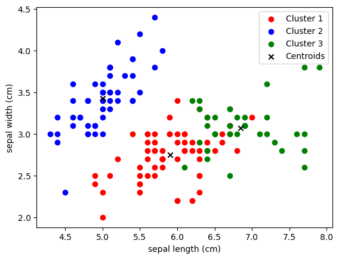
# Compare results from self-made k-means and sklearn's k-means
np.allclose(k_means(X, k=3)[0], kmeans.cluster_centers_)
np.allclose(k_means(X, k=3)[1], kmeans.labels_)
True# Initialize centroid
init_cent = initialize_centroids(X[:,[0,1]], k=2)[:,[0,1]]
init_centarray([[6.1, 2.8],
[5.7, 3.8]])# create scatter plot of X with column 1 on x-axis and column 2 on y-axis
# add init_cent to the plot and color them differently and make them larger than the normal points
plt.scatter(X[:, 0], X[:, 1])
plt.scatter(init_cent[:, 0], init_cent[:, 1], s=100, c='red')
plt.xlabel(iris.feature_names[0])
plt.ylabel(iris.feature_names[1])
plt.show()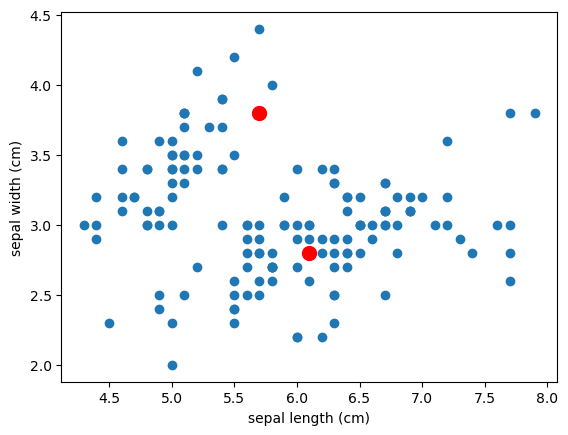
comp_dist = compute_distances(X[:,[0,1]], init_cent)
comp_dist = pd.DataFrame(comp_dist, columns=['centroid_1', 'centroid_2'])
# move the text up so its not on the line itself
plt.scatter(init_cent[:, 0], init_cent[:, 1], s=100, c='red')
plt.scatter(X[0, 0], X[0, 1], s=100, c='green')
plt.plot([init_cent[0, 0], X[0, 0]], [init_cent[0, 1], X[0, 1]], c='black')
plt.plot([init_cent[1, 0], X[0, 0]], [init_cent[1, 1], X[0, 1]], c='black')
plt.text((init_cent[0, 0] + X[0, 0]) / 2, (init_cent[0, 1] + X[0, 1]) / 2 + 0.05, f'{comp_dist[0,0]:.2f}', c='black')
plt.text((init_cent[1, 0] + X[0, 0]) / 2, (init_cent[1, 1] + X[0, 1]) / 2 + 0.1, f'{comp_dist[0,1]:.2f}', c='black')
plt.xlabel(iris.feature_names[0])
plt.ylabel(iris.feature_names[1])
plt.legend(['Centroids','Data Point 1'])
plt.show()KeyError: (0, 0)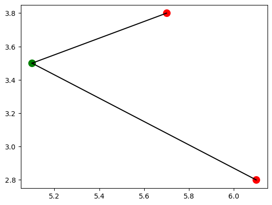
cluster = assign_clusters(comp_dist)
# merge cluster and comp_dist into one dataframe
comp_dist['cluster'] = cluster
comp_dist| centroid_1 | centroid_2 | cluster | |
|---|---|---|---|
| 0 | 1.220656 | 0.670820 | 1 |
| 1 | 1.216553 | 1.131371 | 1 |
| 2 | 1.456022 | 1.166190 | 1 |
| 3 | 1.529706 | 1.303840 | 1 |
| 4 | 1.360147 | 0.728011 | 1 |
| ... | ... | ... | ... |
| 145 | 0.632456 | 1.280625 | 0 |
| 146 | 0.360555 | 1.431782 | 0 |
| 147 | 0.447214 | 1.131371 | 0 |
| 148 | 0.608276 | 0.640312 | 0 |
| 149 | 0.282843 | 0.824621 | 0 |
150 rows × 3 columns
# plot the data points and the centroids, color the data points according to the cluster they belong to
plt.scatter(X[:, 0], X[:, 1], c=cluster)
plt.scatter(init_cent[:, 0], init_cent[:, 1], s=100, c='red')
plt.xlabel(iris.feature_names[0])
plt.ylabel(iris.feature_names[1])
plt.show()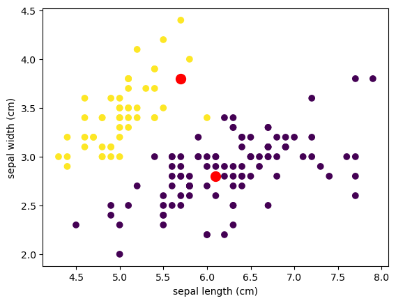
update_centroids(X[:,[0,1]], cluster, k=2)array([[6.247, 2.861],
[5.036, 3.45 ]])# Plot the data points and the updated centroids
plt.scatter(X[:, 0], X[:, 1], c=cluster)
plt.scatter(update_centroids(X[:,[0,1,2]], cluster, k=3)[:, 0], update_centroids(X[:,[0,1]], cluster, k=2)[:, 1], s=100, c='red')
plt.xlabel(iris.feature_names[0])
plt.ylabel(iris.feature_names[1])
plt.show()NameError: name 'cluster' is not definedXarray([[5.1, 3.5, 1.4, 0.2],
[4.9, 3. , 1.4, 0.2],
[4.7, 3.2, 1.3, 0.2],
[4.6, 3.1, 1.5, 0.2],
[5. , 3.6, 1.4, 0.2],
[5.4, 3.9, 1.7, 0.4],
[4.6, 3.4, 1.4, 0.3],
[5. , 3.4, 1.5, 0.2],
[4.4, 2.9, 1.4, 0.2],
[4.9, 3.1, 1.5, 0.1],
[5.4, 3.7, 1.5, 0.2],
[4.8, 3.4, 1.6, 0.2],
[4.8, 3. , 1.4, 0.1],
[4.3, 3. , 1.1, 0.1],
[5.8, 4. , 1.2, 0.2],
[5.7, 4.4, 1.5, 0.4],
[5.4, 3.9, 1.3, 0.4],
[5.1, 3.5, 1.4, 0.3],
[5.7, 3.8, 1.7, 0.3],
[5.1, 3.8, 1.5, 0.3],
[5.4, 3.4, 1.7, 0.2],
[5.1, 3.7, 1.5, 0.4],
[4.6, 3.6, 1. , 0.2],
[5.1, 3.3, 1.7, 0.5],
[4.8, 3.4, 1.9, 0.2],
[5. , 3. , 1.6, 0.2],
[5. , 3.4, 1.6, 0.4],
[5.2, 3.5, 1.5, 0.2],
[5.2, 3.4, 1.4, 0.2],
[4.7, 3.2, 1.6, 0.2],
[4.8, 3.1, 1.6, 0.2],
[5.4, 3.4, 1.5, 0.4],
[5.2, 4.1, 1.5, 0.1],
[5.5, 4.2, 1.4, 0.2],
[4.9, 3.1, 1.5, 0.2],
[5. , 3.2, 1.2, 0.2],
[5.5, 3.5, 1.3, 0.2],
[4.9, 3.6, 1.4, 0.1],
[4.4, 3. , 1.3, 0.2],
[5.1, 3.4, 1.5, 0.2],
[5. , 3.5, 1.3, 0.3],
[4.5, 2.3, 1.3, 0.3],
[4.4, 3.2, 1.3, 0.2],
[5. , 3.5, 1.6, 0.6],
[5.1, 3.8, 1.9, 0.4],
[4.8, 3. , 1.4, 0.3],
[5.1, 3.8, 1.6, 0.2],
[4.6, 3.2, 1.4, 0.2],
[5.3, 3.7, 1.5, 0.2],
[5. , 3.3, 1.4, 0.2],
[7. , 3.2, 4.7, 1.4],
[6.4, 3.2, 4.5, 1.5],
[6.9, 3.1, 4.9, 1.5],
[5.5, 2.3, 4. , 1.3],
[6.5, 2.8, 4.6, 1.5],
[5.7, 2.8, 4.5, 1.3],
[6.3, 3.3, 4.7, 1.6],
[4.9, 2.4, 3.3, 1. ],
[6.6, 2.9, 4.6, 1.3],
[5.2, 2.7, 3.9, 1.4],
[5. , 2. , 3.5, 1. ],
[5.9, 3. , 4.2, 1.5],
[6. , 2.2, 4. , 1. ],
[6.1, 2.9, 4.7, 1.4],
[5.6, 2.9, 3.6, 1.3],
[6.7, 3.1, 4.4, 1.4],
[5.6, 3. , 4.5, 1.5],
[5.8, 2.7, 4.1, 1. ],
[6.2, 2.2, 4.5, 1.5],
[5.6, 2.5, 3.9, 1.1],
[5.9, 3.2, 4.8, 1.8],
[6.1, 2.8, 4. , 1.3],
[6.3, 2.5, 4.9, 1.5],
[6.1, 2.8, 4.7, 1.2],
[6.4, 2.9, 4.3, 1.3],
[6.6, 3. , 4.4, 1.4],
[6.8, 2.8, 4.8, 1.4],
[6.7, 3. , 5. , 1.7],
[6. , 2.9, 4.5, 1.5],
[5.7, 2.6, 3.5, 1. ],
[5.5, 2.4, 3.8, 1.1],
[5.5, 2.4, 3.7, 1. ],
[5.8, 2.7, 3.9, 1.2],
[6. , 2.7, 5.1, 1.6],
[5.4, 3. , 4.5, 1.5],
[6. , 3.4, 4.5, 1.6],
[6.7, 3.1, 4.7, 1.5],
[6.3, 2.3, 4.4, 1.3],
[5.6, 3. , 4.1, 1.3],
[5.5, 2.5, 4. , 1.3],
[5.5, 2.6, 4.4, 1.2],
[6.1, 3. , 4.6, 1.4],
[5.8, 2.6, 4. , 1.2],
[5. , 2.3, 3.3, 1. ],
[5.6, 2.7, 4.2, 1.3],
[5.7, 3. , 4.2, 1.2],
[5.7, 2.9, 4.2, 1.3],
[6.2, 2.9, 4.3, 1.3],
[5.1, 2.5, 3. , 1.1],
[5.7, 2.8, 4.1, 1.3],
[6.3, 3.3, 6. , 2.5],
[5.8, 2.7, 5.1, 1.9],
[7.1, 3. , 5.9, 2.1],
[6.3, 2.9, 5.6, 1.8],
[6.5, 3. , 5.8, 2.2],
[7.6, 3. , 6.6, 2.1],
[4.9, 2.5, 4.5, 1.7],
[7.3, 2.9, 6.3, 1.8],
[6.7, 2.5, 5.8, 1.8],
[7.2, 3.6, 6.1, 2.5],
[6.5, 3.2, 5.1, 2. ],
[6.4, 2.7, 5.3, 1.9],
[6.8, 3. , 5.5, 2.1],
[5.7, 2.5, 5. , 2. ],
[5.8, 2.8, 5.1, 2.4],
[6.4, 3.2, 5.3, 2.3],
[6.5, 3. , 5.5, 1.8],
[7.7, 3.8, 6.7, 2.2],
[7.7, 2.6, 6.9, 2.3],
[6. , 2.2, 5. , 1.5],
[6.9, 3.2, 5.7, 2.3],
[5.6, 2.8, 4.9, 2. ],
[7.7, 2.8, 6.7, 2. ],
[6.3, 2.7, 4.9, 1.8],
[6.7, 3.3, 5.7, 2.1],
[7.2, 3.2, 6. , 1.8],
[6.2, 2.8, 4.8, 1.8],
[6.1, 3. , 4.9, 1.8],
[6.4, 2.8, 5.6, 2.1],
[7.2, 3. , 5.8, 1.6],
[7.4, 2.8, 6.1, 1.9],
[7.9, 3.8, 6.4, 2. ],
[6.4, 2.8, 5.6, 2.2],
[6.3, 2.8, 5.1, 1.5],
[6.1, 2.6, 5.6, 1.4],
[7.7, 3. , 6.1, 2.3],
[6.3, 3.4, 5.6, 2.4],
[6.4, 3.1, 5.5, 1.8],
[6. , 3. , 4.8, 1.8],
[6.9, 3.1, 5.4, 2.1],
[6.7, 3.1, 5.6, 2.4],
[6.9, 3.1, 5.1, 2.3],
[5.8, 2.7, 5.1, 1.9],
[6.8, 3.2, 5.9, 2.3],
[6.7, 3.3, 5.7, 2.5],
[6.7, 3. , 5.2, 2.3],
[6.3, 2.5, 5. , 1.9],
[6.5, 3. , 5.2, 2. ],
[6.2, 3.4, 5.4, 2.3],
[5.9, 3. , 5.1, 1.8]])wcss = []
k_values = range(1, 11)
for k in k_values:
kmeans = KMeans(n_clusters=k, random_state=0)
kmeans.fit(X)
wcss.append(kmeans.inertia_)/opt/conda/lib/python3.11/site-packages/sklearn/cluster/_kmeans.py:1416: FutureWarning: The default value of `n_init` will change from 10 to 'auto' in 1.4. Set the value of `n_init` explicitly to suppress the warning
super()._check_params_vs_input(X, default_n_init=10)
/opt/conda/lib/python3.11/site-packages/sklearn/cluster/_kmeans.py:1416: FutureWarning: The default value of `n_init` will change from 10 to 'auto' in 1.4. Set the value of `n_init` explicitly to suppress the warning
super()._check_params_vs_input(X, default_n_init=10)
/opt/conda/lib/python3.11/site-packages/sklearn/cluster/_kmeans.py:1416: FutureWarning: The default value of `n_init` will change from 10 to 'auto' in 1.4. Set the value of `n_init` explicitly to suppress the warning
super()._check_params_vs_input(X, default_n_init=10)
/opt/conda/lib/python3.11/site-packages/sklearn/cluster/_kmeans.py:1416: FutureWarning: The default value of `n_init` will change from 10 to 'auto' in 1.4. Set the value of `n_init` explicitly to suppress the warning
super()._check_params_vs_input(X, default_n_init=10)
/opt/conda/lib/python3.11/site-packages/sklearn/cluster/_kmeans.py:1416: FutureWarning: The default value of `n_init` will change from 10 to 'auto' in 1.4. Set the value of `n_init` explicitly to suppress the warning
super()._check_params_vs_input(X, default_n_init=10)
/opt/conda/lib/python3.11/site-packages/sklearn/cluster/_kmeans.py:1416: FutureWarning: The default value of `n_init` will change from 10 to 'auto' in 1.4. Set the value of `n_init` explicitly to suppress the warning
super()._check_params_vs_input(X, default_n_init=10)
/opt/conda/lib/python3.11/site-packages/sklearn/cluster/_kmeans.py:1416: FutureWarning: The default value of `n_init` will change from 10 to 'auto' in 1.4. Set the value of `n_init` explicitly to suppress the warning
super()._check_params_vs_input(X, default_n_init=10)
/opt/conda/lib/python3.11/site-packages/sklearn/cluster/_kmeans.py:1416: FutureWarning: The default value of `n_init` will change from 10 to 'auto' in 1.4. Set the value of `n_init` explicitly to suppress the warning
super()._check_params_vs_input(X, default_n_init=10)
/opt/conda/lib/python3.11/site-packages/sklearn/cluster/_kmeans.py:1416: FutureWarning: The default value of `n_init` will change from 10 to 'auto' in 1.4. Set the value of `n_init` explicitly to suppress the warning
super()._check_params_vs_input(X, default_n_init=10)
/opt/conda/lib/python3.11/site-packages/sklearn/cluster/_kmeans.py:1416: FutureWarning: The default value of `n_init` will change from 10 to 'auto' in 1.4. Set the value of `n_init` explicitly to suppress the warning
super()._check_params_vs_input(X, default_n_init=10)plt.plot(k_values, wcss, 'bo-')
plt.xlabel('Number of clusters (k)')
plt.ylabel('Within-cluster sum of squares (WCSS)')
plt.title('Elbow Method for Optimal k')
plt.show()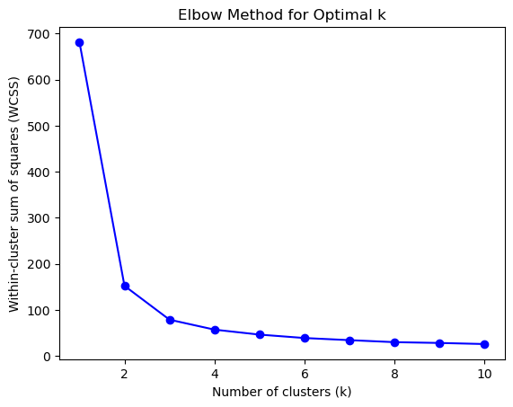
from sklearn.metrics import silhouette_score
silhouette_scores = []
k_values = range(2, 11) # Silhouette score is not defined for k=1
for k in k_values:
kmeans = KMeans(n_clusters=k, random_state=0)
kmeans.fit(X)
score = silhouette_score(X, kmeans.labels_)
silhouette_scores.append(score)/opt/conda/lib/python3.11/site-packages/sklearn/cluster/_kmeans.py:1416: FutureWarning: The default value of `n_init` will change from 10 to 'auto' in 1.4. Set the value of `n_init` explicitly to suppress the warning
super()._check_params_vs_input(X, default_n_init=10)
/opt/conda/lib/python3.11/site-packages/sklearn/cluster/_kmeans.py:1416: FutureWarning: The default value of `n_init` will change from 10 to 'auto' in 1.4. Set the value of `n_init` explicitly to suppress the warning
super()._check_params_vs_input(X, default_n_init=10)
/opt/conda/lib/python3.11/site-packages/sklearn/cluster/_kmeans.py:1416: FutureWarning: The default value of `n_init` will change from 10 to 'auto' in 1.4. Set the value of `n_init` explicitly to suppress the warning
super()._check_params_vs_input(X, default_n_init=10)
/opt/conda/lib/python3.11/site-packages/sklearn/cluster/_kmeans.py:1416: FutureWarning: The default value of `n_init` will change from 10 to 'auto' in 1.4. Set the value of `n_init` explicitly to suppress the warning
super()._check_params_vs_input(X, default_n_init=10)
/opt/conda/lib/python3.11/site-packages/sklearn/cluster/_kmeans.py:1416: FutureWarning: The default value of `n_init` will change from 10 to 'auto' in 1.4. Set the value of `n_init` explicitly to suppress the warning
super()._check_params_vs_input(X, default_n_init=10)
/opt/conda/lib/python3.11/site-packages/sklearn/cluster/_kmeans.py:1416: FutureWarning: The default value of `n_init` will change from 10 to 'auto' in 1.4. Set the value of `n_init` explicitly to suppress the warning
super()._check_params_vs_input(X, default_n_init=10)
/opt/conda/lib/python3.11/site-packages/sklearn/cluster/_kmeans.py:1416: FutureWarning: The default value of `n_init` will change from 10 to 'auto' in 1.4. Set the value of `n_init` explicitly to suppress the warning
super()._check_params_vs_input(X, default_n_init=10)
/opt/conda/lib/python3.11/site-packages/sklearn/cluster/_kmeans.py:1416: FutureWarning: The default value of `n_init` will change from 10 to 'auto' in 1.4. Set the value of `n_init` explicitly to suppress the warning
super()._check_params_vs_input(X, default_n_init=10)
/opt/conda/lib/python3.11/site-packages/sklearn/cluster/_kmeans.py:1416: FutureWarning: The default value of `n_init` will change from 10 to 'auto' in 1.4. Set the value of `n_init` explicitly to suppress the warning
super()._check_params_vs_input(X, default_n_init=10)plt.plot(k_values, silhouette_scores, 'bo-')
plt.xlabel('Number of clusters (k)')
plt.ylabel('Silhouette Score')
plt.title('Silhouette Method for Optimal k')
plt.show()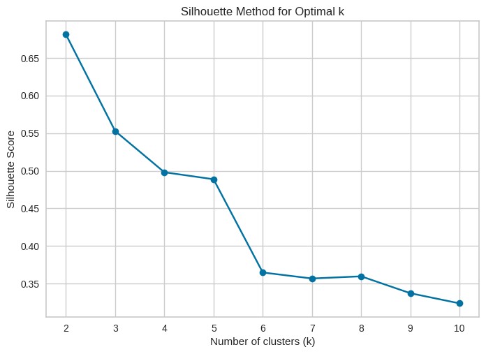
from yellowbrick.cluster import SilhouetteVisualizer
kmeans = KMeans(n_clusters=2, random_state=0)
visualizer = SilhouetteVisualizer(kmeans, colors='yellowbrick')
visualizer.fit(X) # Fit the data to the visualizer
visualizer.show() # Finalize and render the figure/opt/conda/lib/python3.11/site-packages/sklearn/cluster/_kmeans.py:1416: FutureWarning: The default value of `n_init` will change from 10 to 'auto' in 1.4. Set the value of `n_init` explicitly to suppress the warning
super()._check_params_vs_input(X, default_n_init=10)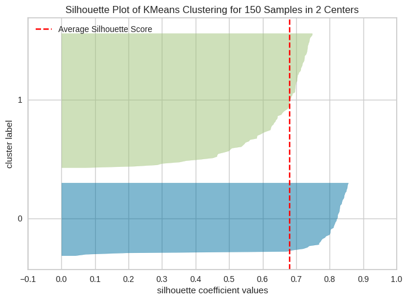
from yellowbrick.cluster import SilhouetteVisualizer
kmeans = KMeans(n_clusters=3, random_state=0)
visualizer = SilhouetteVisualizer(kmeans, colors='yellowbrick')
visualizer.fit(X) # Fit the data to the visualizer
visualizer.show() # Finalize and render the figure/opt/conda/lib/python3.11/site-packages/sklearn/cluster/_kmeans.py:1416: FutureWarning: The default value of `n_init` will change from 10 to 'auto' in 1.4. Set the value of `n_init` explicitly to suppress the warning
super()._check_params_vs_input(X, default_n_init=10)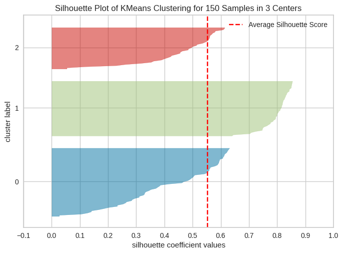
todo: Use the Yogurt dataset from HW3 to estimate a latent-class MNL model. This model was formally introduced in the paper by Kamakura & Russell (1989), which you may want to read or reference. Compare the results to the standard (aggregate) MNL model from HW3. What are the differences in the parameter estimates?
yogurt = pd.read_csv('yogurt_data.csv')
yogurt['yogurt_type'] = yogurt[['y1', 'y2', 'y3', 'y4']].idxmax(axis=1).str[1].astype(int)yogurt.head()| id | y1 | y2 | y3 | y4 | f1 | f2 | f3 | f4 | p1 | p2 | p3 | p4 | yogurt_type | |
|---|---|---|---|---|---|---|---|---|---|---|---|---|---|---|
| 0 | 1 | 0 | 0 | 0 | 1 | 0 | 0 | 0 | 0 | 0.108 | 0.081 | 0.061 | 0.079 | 4 |
| 1 | 2 | 0 | 1 | 0 | 0 | 0 | 0 | 0 | 0 | 0.108 | 0.098 | 0.064 | 0.075 | 2 |
| 2 | 3 | 0 | 1 | 0 | 0 | 0 | 0 | 0 | 0 | 0.108 | 0.098 | 0.061 | 0.086 | 2 |
| 3 | 4 | 0 | 1 | 0 | 0 | 0 | 0 | 0 | 0 | 0.108 | 0.098 | 0.061 | 0.086 | 2 |
| 4 | 5 | 0 | 1 | 0 | 0 | 0 | 0 | 0 | 0 | 0.125 | 0.098 | 0.049 | 0.079 | 2 |
y1 = yogurt['y1'].sum()
y2 = yogurt['y2'].sum()
y3 = yogurt['y3'].sum()
y4 = yogurt['y4'].sum()
y1_share = y1 / (y1 + y2 + y3 + y4)
y2_share = y2 / (y1 + y2 + y3 + y4)
y3_share = y3 / (y1 + y2 + y3 + y4)
y4_share = y4 / (y1 + y2 + y3 + y4)
y1_share, y2_share, y3_share, y4_share(0.3419753086419753,
0.4012345679012346,
0.029218106995884775,
0.22757201646090536)import rpy2.robjects as ro
from rpy2.robjects import pandas2ri
from rpy2.robjects.packages import importr
pandas2ri.activate()
# Load poLCA package
base = importr('base')
utils = importr('utils')
poLCA = importr('poLCA')
# Convert the pandas DataFrame to an R data.frame
r_df = pandas2ri.py2rpy(yogurt)
model_formula = ro.Formula('cbind(f1, f2, f3, f4, p1, p2, p3, p4) ~ 1')
# Run poLCA with 2 latent classes
n_classes = 2
poLCA_result = poLCA.poLCA(model_formula, r_df, nclass=n_classes)
poLCA_result_py = ro.conversion.rpy2py(poLCA_result)
class_coefficients = poLCA_result_py.rx2('coeff')
class_coefficients
ALERT: some manifest variables contain values that are not
positive integers. For poLCA to run, please recode categorical
outcome variables to increment from 1 to the maximum number of
outcome categories for each variable.
<rpy2.rinterface_lib.sexp.NULLType object at 0x7f4a4b0cc7d0> [0]import numpy as np
import matplotlib.pyplot as plt
# Create some example data
np.random.seed(0)
X = np.random.randn(100, 2)
y = (X[:, 0] + 0.5 * X[:, 1] > 0.5).astype(int)
# Plot the data
plt.scatter(X[:, 0], X[:, 1], c=y, cmap='bwr', alpha=0.7)
plt.xlabel('x1')
plt.ylabel('x2')
plt.title('Example Data')
plt.show()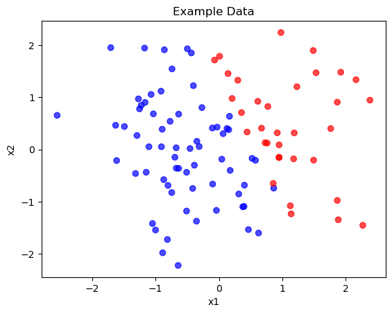
# Linear classifier without bias
w = np.array([1, 1])
b = 0
# Plot data points
plt.scatter(X[:, 0], X[:, 1], c=y, cmap='bwr', alpha=0.7)
# Plot decision boundary
x1 = np.linspace(-3, 3, 100)
x2 = -w[0] / w[1] * x1
plt.plot(x1, x2, label='Without Bias (Passes through origin)')
plt.xlabel('x1')
plt.ylabel('x2')
plt.legend()
plt.title('Decision Boundary without Bias')
plt.show()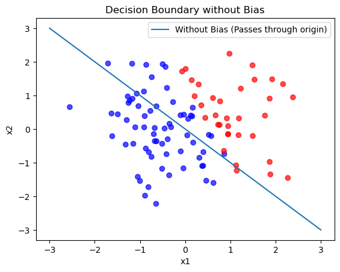
# Linear classifier with bias
w = np.array([1, 1])
b = -1
# Plot data points
plt.scatter(X[:, 0], X[:, 1], c=y, cmap='bwr', alpha=0.7)
# Plot decision boundary
x1 = np.linspace(-3, 3, 100)
x2 = -w[0] / w[1] * x1 - b / w[1]
plt.plot(x1, x2, label='With Bias (Shifted)')
plt.xlabel('x1')
plt.ylabel('x2')
plt.legend()
plt.title('Decision Boundary with Bias')
plt.show()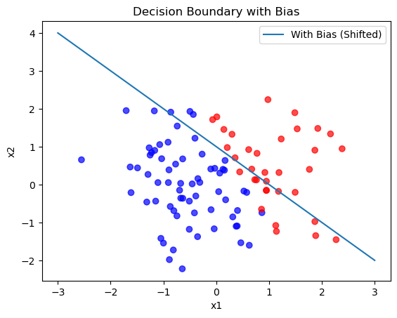